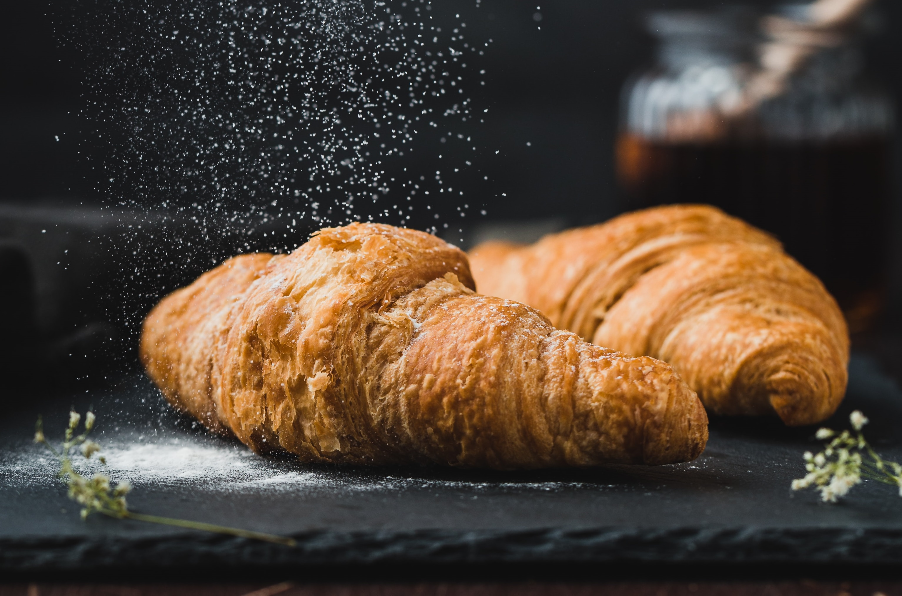

🥐 A Picture of a Croissant
What is a croissant?
A croissant is a buttery, flaky, French viennoiserie pastry inspired by the shape of the Austrian kipferl but using the French yeast-leavened laminated dough. Croissants are named for their historical crescent shape, the dough is layered with butter, rolled and folded several times in succession, then rolled into a thin sheet, in a technique called laminating. The process results in a layered, flaky texture, similar to a puff pastry.